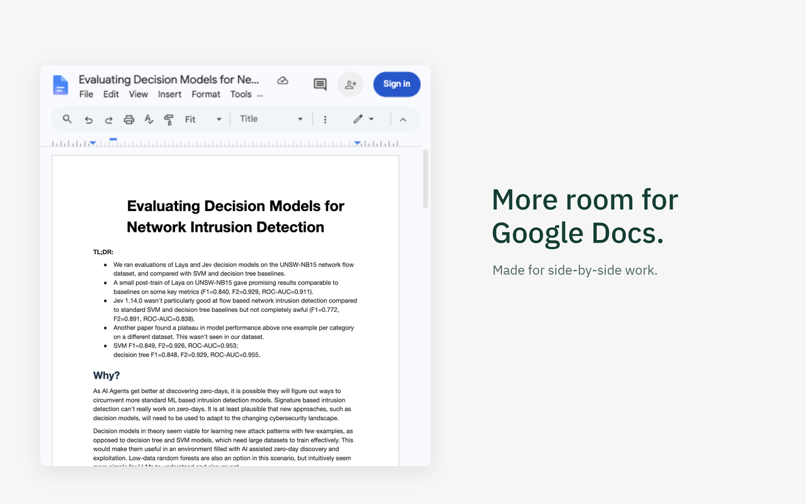
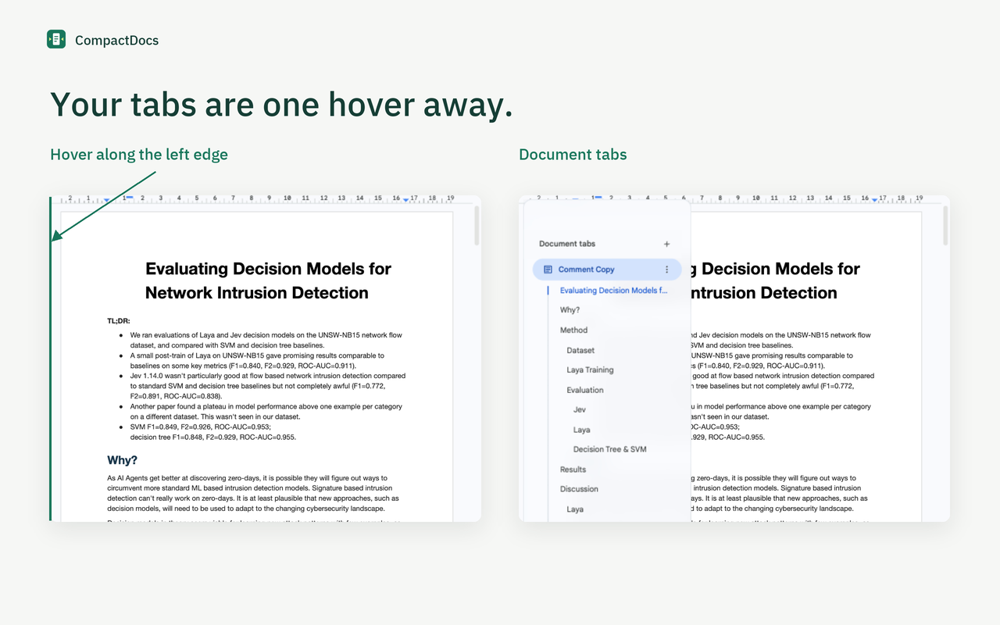

Google Docs, with a little more room
A smaller window.
More room to write.
Keep a document beside your other work. CompactDocs tucks away the side panels and fits the page to your narrow window.
Version 1.4.1 · Install manually in Chrome
Not yet on the Chrome Web Store.

Out of the way, still within reach
Your panels are
one hover away.
Hover anywhere along the left edge for document tabs, or the right edge for the Google side panel. Invisible, full-height targets keep the window clear. A short delay helps avoid accidental reveals.
The native tabs appear in a rounded, translucent overlay, without shifting your document. Move away to dismiss it. You can also click, use Tab for keyboard access, and press Esc to close.

Just three preferences
Choose what
stays tucked away.
Open the extension popup to change your settings. All three are saved on your device.
- Document tabs
- Keep tabs tucked away. Reveal them at the left edge.
- Google side panel
- Keep the panel tucked away. Reveal it at the right edge.
- Fit page to window
- Use Google Docs' native Fit zoom for paged documents in narrow windows. A manual numeric zoom change pauses automatic fitting. Pageless documents keep their native zoom.
Get started
Make room for
your next document.
Download the release ZIP from GitHub and extract it. In chrome://extensions, enable Developer mode, choose Load unpacked, and select the extracted extension folder. Reload your open Docs documents.
Docs interface changes and non-English labels may affect compatibility.